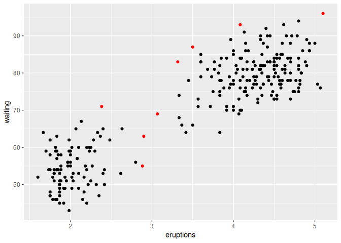
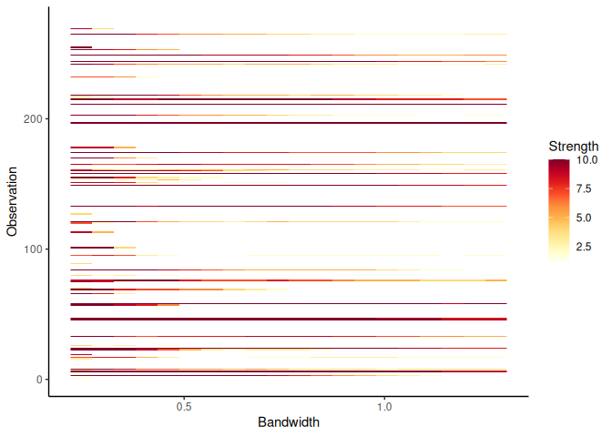

lookout identifies outliers in data using leave-one-out kernel density estimates and extreme value theory. The bandwidth for kernel density estimates is computed using persistent homology, a technique in topological data analysis. Using peak-over-threshold method, a Generalized Pareto Distribution is fitted to the log of leave-one-out kde values to identify outliers.
See Kandanaarachchi and Hyndman (2021) for the underlying methodology.
Installation
You can install the released version of lookout from CRAN with:
#install.packages("lookout")And the development version from GitHub with:
# install.packages("devtools")
devtools::install_github("sevvandi/lookout")Example
library(lookout)
lo <- lookout(faithful)
lo
#> Leave-out-out KDE outliers using lookout algorithm
#>
#> Call: lookout(X = faithful)
#>
#> Outliers Probability
#> 1 6 0.005553188
#> 2 24 0.006423949
#> 3 46 0.007934127
#> 4 149 0.008300670
#> 5 158 0.007242257
#> 6 197 0.004333429
#> 7 211 0.000000000
#> 8 244 0.004956339
autoplot(lo)
Next we look at outlier persistence. The outlier persistence plot shows the outliers that persist over a range of bandwidth values for different levels of significance. The strength is inversely proportional to the level of significance. If the level of significance is 0.01, then the strength is 10 and if it is 0.1, then the strength is 1.
persistence <- persisting_outliers(faithful)
autoplot(persistence)